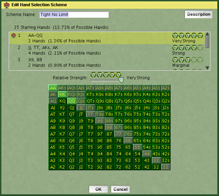

|
Opponents
|
Player types are nicknames given to the style of play of different kinds of players.
When you sit down at a poker table, you will typically find yourself surrounded by a variety of different player styles. The location of a poker game may change the mix of the type of players you play against. For example, a home game may have a higher percentage of weak players, or a casino a higher percentage of strong players. We have a different mix of player types for the pre-defined tournaments the game shipped with. You can change this mix of players by making a copy of a tournament definition and then changing the options under the Opponent Mix tab of the Edit Tournament window.
We have designed the computer AI with player types that you will
most likely see and you may also create your own AI player types, with
their own starting hand selection and strategy adjustments. We recommend a mix of AI player types in your games as
it will be more difficult to identify individual player types and stratigies.
| Player Types |
|
||||||||||||||||||||
| Summary | Summarizes the selected player type.
|
Click the New, Copy, or Edit
buttons under Player Types to alter the setting shown below:
| Hand Selection | An experienced hold'em player will alter how they play
certain hands depending on how many players are at the table. You have
the ability to specify how the computer AI chooses hands to play for
four different situations, ranging from a full table to heads up play
against one opponent. Hand Selection Schemes of your design can be created in the Hands tab of the Options screen.
|
|||||||||||||||||||||
| Play Style | Each player type has dozens of unique characteristics that
define their playing style. By clicking the symbol to the left of each
play style category or sub category, you may Example: By adjusting the slider to the right of Hand
Selection when Hand Selection is |
|||||||||||||||||||||
|
|
A loose player plays more hands then the average player and inevitably is involved in more pots. They will many times will call the starting hands to at least see the flop. A tight player is conservative and plays fewer hands then the average player. All players can be classified anywhere between Loose and Tight. How tight a player is playing should not to be confused with their aggressiveness. With sliders in the center at 50, the player plays in exact
accordance to the active Hand Selection Scheme based on the number of
players at the table chosen at the top of the Edit Player Type screen.
As you adjust the slider to the left, the player becomes increasingly
tight, with more hands being considered weak. When the slider is all
the way to the left at zero, the active hand selection will be ignored,
and the player will fold everything but the very strongest hands. As
you adjust the slider to the right, the player becomes increasingly
loose, with more hands being considered playable. When the slider is
all the way to the right at 100, every hand is played like it was
unbeatable.
|
|||||||||||||||||||||
|
|
|
|||||||||||||||||||||
|
All the way to the left plays obliviously, they have no consideration of their or their opponents stack size. Center adjusts well to tournament circumstances. All the way to the right severely over-compensates how they adjust to the stack sizes.
|
||||||||||||||||||||||
|
All the way to the left significantly under-values straight and flush draws. All the way to the left significantly over-values straight and flush draws.
|
||||||||||||||||||||||
|
All the way to the left the player does not play their poor cards because they haven't played in a while and do not go on tilt. All the way to the right they play a sloppy, emotional game.
|
||||||||||||||||||||||
|
Hands
|
The hand selection scheme controls how the AI reacts to their hole
cards. This tells only a small fraction of the whole story, as it
doesn't reflect any consideration of the other basic decision-making
factors, which can very significantly affect the outcome. However, the
hand selection is a critical starting point in the decision making
process. The Hand Selection Schemes here are used in the makeup of
player types in the Hand Selection of the Edit Player Type screen.
| Hand Selection Schemes |
|
||||||||
| Summary | Summarizes the selected hand scheme. The poker chips represent the relative strength of each hand. |

| Edit Hand Selection Scheme |
|